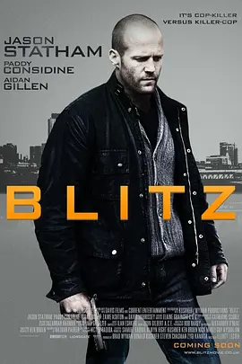

6.3
玩命追踪
Blitz
2011
英国
评分 6.3
导演:
艾略特·莱斯特
演员:
杰森·斯坦森 / 帕迪·康斯戴恩 / 艾丹·吉伦 / 扎威·阿什顿 / 大卫·莫瑞瑟
类型:
动作,惊悚,犯罪
剧情简介
伦敦的阴雨街头光线昏暗，一名绰号“Blitz”的杀手四处游走，他挥动锤子的动作利落而残酷，专挑警察下手，让整座城市陷入恐慌。他在案发前后主动向报社编辑通风报信，用残忍细节挑衅警方，将每一次谋杀变成他与社会之间的怪诞游戏。媒体因他而沸腾，警方却在压力下步步受限。布兰特警官登场时，像从混乱缝隙里硬生生闯出来的人。他粗暴、火爆、桀骜不驯，是同事们口中永远“不是按规矩来”的那类警察，但他在街头的直觉与狠劲却无人能比。尽管因暴力执法屡遭投诉，但面对一个不断猎杀同袍的疯子，他被再次推上最前线。布兰特与新搭档纳什开始联手追查，他们穿梭在阴冷的警局、犯罪现场与狭窄后巷，试图从毫无规律的凶案中找出破绽。而“Blitz”似乎享受着与布兰特的对抗，每一次作案后留给他的线索都带着挑衅意味。布兰特在审讯室怒拍桌面，在街头追逐中撞翻车辆，像个不计代价也要把城市从恐惧中扯回来的孤狼。随着调查深入，“Blitz”愈加嚣张，警方内部压力骤增，公众恐慌不断发酵。布兰特意识到，要抓住这个以“被关注”为快感的杀手，必须跳脱常规。他用街头经验、武力和直觉逼近对方，让这场猎人与猎物的拉扯愈发白热化。在阴霾压顶的伦敦夜色下，布兰特明白，只有用自己的方式结束这场血腥游戏，才能让城市重新呼吸。